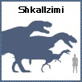
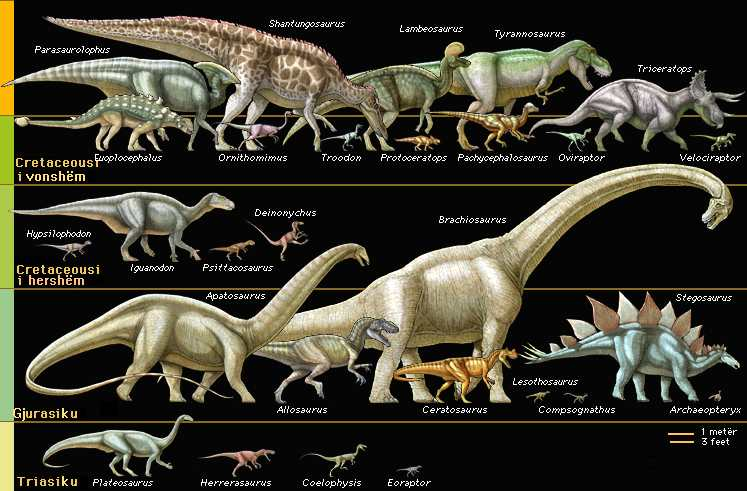

Madhësia e dinosaureve
Dinosauret ndryshonin shumë për nga madhësia dhe lloji, radhitur prej gjiganti Apatosaurus, i cili ka pasur një gjatësi prej 24 m, e deri te Compsognathusi, një grabitqar i vogël ku ka qenë i gjatë rreth 60 cm, ose një madhësi të njëjtë sikur të një pate të ditës-moderne.

Më poshtë mund të shihni tabelën e dinosaureve me madhësitë e tyre: